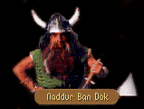

|
|
|  |
[CHAPTER 1]
[CHAPTER 2]
[CHAPTER 3]
[CHAPTER 6] |
|
|
| CHAPTER 1 - FIRST | CHAPTER 1 - SECOND |
|
Sparks rocketed down the corridor. Slamming Owyn flat against the mineshaft walls, Locklear narrowly leapt for cover himself as something skidded along the rocky floor. Abruptly the glowing cone of fire winked out of existence as it collided with an unseen wall. After several long heartbeats, the Seigneur peeled himself away from the wall, just in time to meet the gaze of a short tree stump of a man. NADDUR: Bloddy awful hammer! You'd best 'ave a demon in your bones. You 'ave come to take a whack at killing the beastie 'ave you not? LOCKLEAR: Beastie? NADDUR: Beastie, aye! 'alf a week ago we 'eard something fierce a'bayin' in the mine, terrible cold like. Of course a dwarf knows the sound instant whether he's heard it before or not - Brak Nurr. Curse of every hole delver since first dwarves took up hammers. LOCKLEAR: I've never heard of them. NADDUR: No one has in quite a while, laddie. There 'asn't been a Brak Nurr in the upper mines for well on since Delong the Great laid claim to the Kingdom of the Isles. We thought we'd laid low the lot o' them but the kobolds are stirring them up on their quest. LOCKLEAR: Kobolds? NADDUR: Your folk call them gnomes. They used to worship a dragon what lived down here, but when the dragon disappeared, they thought the dwarven folk 'id him away. Every now and again their leader Feydhir takes a notion to undertake a holy quest to find him. This time they must've woke up a clutch of Brak Nurr. Now the Nurr have collapsed the main passage an' kilt thirty of our kin. We've a reward to whomever can do it in - if you're of a mind and 'ave the spirit that is. |
Sparks rocketed down the corridor. Slamming Owyn flat against the mineshaft walls, Locklear narrowly leapt for cover himself as something skidded along the rocky floor. Abruptly the glowing cone of fire winked out of existence as it collided with an unseen wall. After several long heartbeats, the Seigneur peeled himself away from the wall, just in time to meet the gaze of a short tree stump of a man. NADDUR: I don't know whether ya be comin' or goin' lads, but if yar lookin' for a way through the Mac to Elvandar, you're out of luck. Fault me if ya will for courage sake or call me a drunkard bull, but I've as fast a hammer hand as any under these mountains. I canna clear away several months of Brak Nurr burrowing in an eyeblink ya know! If Elvandar you musta see, then come back in a month or so and perhaps we may 'ave broke through! Or is there something else you were wanting? |
| BRAK NURR |
LOCKLEAR: I'm not saying we're interested in killing your Brak Nurr, but if we were looking for it, what would it be like?NADDUR: 'alf again your height, and a'made of stone, like living rock they are. From out their nostrils they breath a green mist but I'd be wary of getting too close to look, for they'll drop a boulder on your head sure enow. We've already 'ad a few bravos what's come in to try a hand at killing the beastie, but there's not much they've been able to do themselves beyond get themselves so mangled they needed the help of a temple. I'd be as wary of them though as I would be of the beastie. They, none of them, want else but then to claim the gold that we've offered to the creature's slayer.
| TEMPLES |
LOCKLEAR: The way things have been going for us recently, perhaps we would do well to seek a little help at the temples as well. Where are the closest ones?NADDUR: We dwarves don' much dawdle outside o' The Grey Towers or Stone Mountain, but as I ken, there's a Temple of Killian betwixt Zun and Hawk's Hollow. I think there also might be a Temple of Ishap here close, but I can't recall exact where that would be.
| ARMOR REPAIR (if Sumani) |
LOCKLEAR: The barkeeper at the Blue Wheel Inn at LaMut suggested you might be able to repair our armor.NADDUR: If we weren't digging ourselves out o' this pretty mess, aye, we could do something for ya, but we're all tied up to a man. Pardon my saying so, but we've problems a bit more pressing than dealing with dented armor. You might a try a hermit what lives near 'awk's 'ollow. He's gained something of a reputation for himself over the past few years.
| SWORDS (if Sumani) |
LOCKLEAR: If you can't repair our armor, do you at least think you could do something about our swords? I hate to be difficult, but we're really in a crucial situation.NADDUR: Are you deef, laddie? I told you 'afore we 'aven't the time to go repairing things at the moment. We're in a crucial situation ourselves if you 'aven't noticed!
LOCKLEAR: We would be willing to pay you.
NADDUR: I'm sure ya would, just as sure as I know the dwarves below would be willing to pay to get out from under the rock! It's a question of time, time! Bah! Look, if I show ya a trick to sharpening your swards, will ya promise not ta be bothering anybody else in the mine? I think I can turn a 'andful of sovereigns to advantage in LaMut and 'ire a few strong backs.
LOCKLEAR: You have my word of honor.
NADDUR: That shall 'ave to do. I'll teach ya quick a little about weaponcrafting, but I'll expect a fee of 50 sovereigns for my trooble. Do we have a deal?
| YES (enough) | YES (not enough) | NO |
|
LOCKLEAR:
You'll have the gold before we leave. Now, let's see this trick of yours. NADDUR: Watch what I do and carefully. I don't want ta be repeating meself more often than necessary. First off, ya'll want ta have a wheetstone 'andy. Without it, my trick 'ill be as useless as knees on a fish. The most important thing ta keep in mind is the angle at which ya draw the blade 'cross the stone... It's like this. LOCKLEAR: That's interesting... You sharpen the blade so the metal's edge has contrary planes. Opposite sides, opposite directions in the grain. Should make for an interesting cut. NADDUR: It'll make for a cut that yar opponent won't quick forget. The weaponcrafting lesson's over, lad. We've both got more important things to get to. |
LOCKLEAR:
Have you ever had the feeling that the gods were toying with you... NADDUR: Ya don't 'ave the money, ta pay me. If ya canna spare the money, then I canna spare the time. It's as simple as that. |
LOCKLEAR:
I didn't really have a lesson in mind at the moment. We'll see if we can't find someone else to
sharpen our swords for us. NADDUR: Whatever ya like. We both 'ave things to do. |
| RHUARGH (if Lorgan's) |
LOCKLEAR: Who or what was Rhuargh and what is his chamber? I overheard someone talking about him...it?NADDUR: Overheard, my toes! You've been poking about, 'aven't you? No harm in it though. Rhuargh was a grand beastie, a dragon! For centuries 'e lived 'ere in the Mac Mordain, but he passed on at last near ten year ago. I've 'eard our King Dolgan say the elven consort Tomas was present when Rhuargh passed on, but I'm scarce to believe it. The chamber is a marvel though, buried somewhere beyond where our digging is at the moment. At one time there was quite a bit of treasure there - an unfortunate large amount of it concealed in chests with moredhel wordlocks - and perhaps there may still be. Come back later and mayhap we'll see it together!
| WORDLOCKS (if Lorgan's) |
LOCKLEAR: What's a moredhel wordlock?NADDUR: A more bastardly lock never there has been crafted, not by dwarf nor man. It's got little wheels what a body turns, each representing a letter of the alphabet. In order to open the chest, you've got to make the letters spell out a word what the lock's designer had in mind to open it up. Most 'ave a clue plate attached to the front what's written in moredhel - in case the lockmaker forgets the word. Of course the clue plate's of no use to the vast majority of Kingdom folk. Written in bloddy moredhel!
| BRAK NURR KILLED |
Locklear slid away from the dead Brak Nurr.His tongue felt thick and adhesive, a bitter, chalky taste lingering in his mouth and nostrils. He hadn't expected the creature to emit the strange little cloud when it died, but he was glad the battle was finally over.
Wanting air, Locklear turned and nearly stumbled over a small, grinning dwarf.
NADDUR: You've doone it! I 'eard the conflagration down the shaft but I 'ad no idea what was a'happenin'! Congratulations!
LOCKLEAR: Right now, I think we all could just use a rest...
NADDUR: A rest you'll have and you'll be a'needin' it! You'll 'ave to 'ave your strength to be carryin' about all the gold in rewards! Well done!
The dwarf handed Locklear a pouch of gold coins, then disappeared down the damp shaft of the mine.
| FIRST GOODBYE | SECOND GOODBYE |
|
LOCKLEAR:
Thank you for your time, Naddur. I hope you can get things straightened out down here. NADDUR: We'll be fine, soon as we're through some o' this rock and the Brak Nurr is laid low. Ya canna keep us down. LOCKLEAR: I didn't think so. Perhaps we'll meet again. |
LOCKLEAR:
We should leave you to your work, I suppose. Thanks once more for talking with us. NADDUR: Aye, my pleasure as well, but if you'll excuse me... LOCKLEAR: Most certainly. We will be on our way as well. |

| CHAPTER 2 - FIRST | CHAPTER 2 - SECOND |
|
Sparks rocketed down the corridor. Slamming Owyn flat against the mineshaft walls, James narrowly leapt for cover himself as something skidded along the rocky floor. Abruptly the glowing cone of fire winked out of existence as it collided with an unseen wall. After several long heartbeats, the Seigneur peeled himself away from the wall, just in time to meet the gaze of a short tree stump of a man. NADDUR: I 'ope you've not come for passage through to Elvandar. We've gained some ground and cleared out a new section of about three miles or so, but we've a long way to go. After the Brak Nurr collapsed the passages, we've been a wee bit busy. JAMES: Any idea how long a delay we should expect? NADDUR: Even with a 'undred dwarves flaying rock until they've bashed their bairns in, it'll take some while. The rock's festooned like a cheese rind and we 'ave to take it slow, else the lot of it'll come down on our 'eads and the whole of it gone to waste. We may get some 'elp though. We've been tapping messages back 'n forth through the rock and our cousins on the other side say that Aglaranna of the elves may be able to lend a hand. |
Sparks rocketed down the corridor. Slamming Owyn flat against the mineshaft walls, James narrowly leapt for cover himself as something skidded along the rocky floor. Abruptly the glowing cone of fire winked out of existence as it collided with an unseen wall. After several long heartbeats, the Seigneur peeled himself away from the wall, just in time to meet the gaze of a short tree stump of a man. NADDUR: I've a section to clear through before the day's end and I canna be bothered aconstant. What can I do for ya?
|
| ARMOR (if Kobolds) |
JAMES: Any idea where we lay our hands on a suit of Grey Tower plate mail?NADDUR: Ah, blast! I'll have those buggers for dinner if they keep this up... You've been talking to those bloddy kobolds, 'aven't you? What did they tell you they want the armor plate mail for? A treasure for Rhuargh? A ransom for a lost kobold princess? They're having you on and at our expense. Ya canna get Grey Tower Plate this side o' the Cadal!
JAMES: How silly of me. I suppose the dwarves have sworn off wearing armor?
NADDUR: Daft as drovers...all you Kingdom folk. We dwarves no more live in these mines than your King Lyam lives in the ocean, despite the fact he rules his kingdom from an island! The great majority of our kin live in villages much the same as yours, the only difference being that most of our villages are on the western side of the Grey Towers. There's not much call for a dwarven suit of armor this side of LaMut...
JAMES: Then there's absolutely no way we could find a dwarven suit of armor?
NADDUR: I did na' exactly say that, now did I? Ya might go an look at one of the old battlefields. Sometimes bits from the old wars turn up there.
| BATTLE SITES (if Kobolds) |
JAMES: Owyn, how would you like to see a dwarven battleground? I know I would and I'm sure Naddur's just going to burst if he doesn't tell us how to find one. Right, Naddur?NADDUR: If it's one thing a dwarf ne'er forgets, it's ground where kin 'ave spilt their lifeblood. Aye, I can tell ya where ta find a battleground. Tyr-bloddy-Sog. It's whar last your kin and mine crossed swords again' one another and that was a fiercesome battle what would make the battle for Sethanon look like a day at the fair. If you've truly a mind to this, try the west bank of the river right before crossing towards Tyr-Sog. That's whar you'll 'ave your best luck.
| PITS (if Kobolds) |
JAMES: We were trying to find our way below and we ran across a pit we couldn't even see the bottom of. Is there some way of getting around it?NADDUR: The only way around it is over it. Ya'll need a length o' rope before ya can get over the sink shafts. I'd lend you a length of ours, but if you'll pardon the jest, they're all tied up at the moment.
| FIRST GOODBYE | SECOND GOODBYE |
|
JAMES:
We should leave you to your work, I suppose. Thanks once more for talking with us. NADDUR: Aye, my pleasure as well, but if you'll excuse me... JAMES: Most certainly. We will be on our way as well. |
JAMES:
Thank you for your time, Naddur. I hope you can get things straightened out down here. NADDUR: We'll be fine, soon as we're through some o' this rock and the Brak Nurr is laid low. Ya canna keep us down. JAMES: I didn't think so. Perhaps we'll meet again. |

| CHAPTER 3 - FIRST | CHAPTER 3 - SECOND |
|
A shadow approached. From a murky corner of the mine tunnel, the figure advanced towards them. James's pulse quickened for a moment, but he relaxed slightly as he saw they were not about to be attacked. NADDUR: We're at a deed 'alt at the moment. We 'ad a section of mine exposed, nearly the entire length to Elvandar when we found another blasted Brak Nurr hole! It was but a wee tyke and we were able to kill it, but that kept us bent in fits for weeks. Alone, 'e was able to collapse several hundred yards o' rock. We've got to make sure that the mine will 'old up to new 'ammering. Another few months and we should be through to Elvandar. |
Sparks rocketed down the corridor. Slamming Owyn flat against the mineshaft walls, James narrowly leapt for cover himself as something skidded along the rocky floor. Abruptly the glowing cone of fire winked out of existence as it collided with an unseen wall. After several long heartbeats, the Seigneur peeled himself away from the wall, just in time to meet the gaze of a short tree stump of a man. NADDUR: Fault me if ya will for courage sake or call me a drunkard bull, but I've as fast a hammer hand as any under these mountains. I canna clear away several months of Brak Nurr burrowing in an eyeblink ya know! If Elvandar you musta see, then come back in a month or so and perhaps we may 'ave broke through! |
| FIRST GOODBYE | SECOND GOODBYE |
|
JAMES:
Thank you for your time, Naddur. I hope you can get thing sstraightened out down here. NADDUR: We'll be fine, soon as we're through some o' this rock and the Brak Nurr is laid low. Ya canna keep us down. JAMES: I didn't think so. Perhaps we'll meet again.
|
JAMES:
Thank you for your time, Naddur. I hope you can get things straightened out down here. NADDUR: We'll be fine, soon as we're through some o' this rock and the Brak Nurr is laid low. Ya canna keep us down. JAMES: I didn't think so. Perhaps we'll meet again.
|

| CHAPTER 6 - FIRST | CHAPTER 6 - SECOND |
|
They were not alone. Owyn's pulse quickened as he saw the lone figure approach; but when it became apparent they were not being attacked, he relaxed a bit, squinted slightly in an attempt to see who was about to join them. NADDUR: A'heard you comin' down the passageway, and for a moment, I thought you might be another o' them beasties, come to rattle me bones. I suppose we're all a wee bit jumpy down here as yet. OWYN: Hope we didn't startle you too badly. We were just looking around for a way to get to Elvandar. I think I'd heard once it was the other side of the Grey Towers. NADDUR: You've found the way! These mines stretch all the way from one side o' the Grey Towers to the other. We had a collapse here, but we've broke through about an 'alf an 'our ago. I saw me brother McCannur for the first time in months! Oh, but there some tragic loss too. There was a falls in the caverns and the passages to it were terrible damaged. I don't know that we'll ever see it again. Terrible, terrible mess those Brak Nurr made. OWYN: But we can get through to Elvandar? NADDUR: Aye! But I advise you to stick to the main passages as there's some windy bits that can cause some humans distress. As a common we wouldn't let you go alone as you'd get lost, but only the major passages 'ave been cleared. You'll do safe enow. OWYN: Before we go, could we ask you a few questions? NADDUR: I don't see why not. Whadda ya need to know, laddie? |
They were not alone. Owyn's pulse quickened as he saw the lone figure approach; but when it became apparent they were not being attacked, he relaxed a bit, squinted slightly in an attempt to see who was about to join them. NADDUR: I'd not expected ta see you for some while. Did ya get lost in the Mac? OWYN: No, it just occurred to me that perhaps you could answer a few questions for me. NADDUR: I canna guarantee I can tell ya what ya wish ta know, but I'll do me best. Ask your questions. |
| SARTH (if Brother Marc) |
OWYN: I'm surprised we haven't seen many cases of Quegian Fever up this way. They're having problems with it down at the Abbey of Ishap at Sarth.NADDUR: Ach! If you're going to talk about Bourgalan, call it by its name arights, not by that Keshian bark...
OWYN: Sarth was dwarven?
NADDUR: Not the abbey itself, no, but the caverns beneath! It was the greatest emerald mine the dwarves ever delved, the Mac Bourgalan Dok. It ran for miles in every direction and part o' the chambers ran right beneath where the Abbey now stands, though I understand those silly priests 'ave stuffed the tunnels to the rafters with books. We'd still own the caverns now, but we made an arrangement with Mejakaar Blackpatch when he moved into the keep that 'ad been built over one of the entrances...
OWYN: And Mejakaar still owns the mine?
NADDUR: Aye, if corpses can be said to own anything. 'e's been dead a long while, even as dwarves reckon time. The mines are the property now of the Brothers of Ishap, though I doubt they know how to get from their vaults to the main passages of the mine.
| ELVANDAR |
OWYN: After we leave the Mac Mordain Cadal, which way will we take to Elvandar? I've never been there.NADDUR: Ya don't think for a moment it's going to be as easy as that now do ya, lad? The elves don't exactly invite the rest o' the world in for pleasant tea parties and I think they'll take particular exception to your moredhel friend here.
OWYN: Oh, he's not moredhel, he's...
NADDUR: An elf what doesn't know the way to Elvandar? I'm no fool and you'll be an even sorrier whelp if you try that one on one of Warleader Tomas' border rangers. They'll 'ave the both of you 'anging by your ankles from a tree in a sparrow's fall. If what I 'ear from me brother McCannur is true, they may even 'ave cause to shoot your friend on sight.
OWYN: Why? What would they have against Gorath?
NADDUR: Not 'im personally, again the moredhel. I've not sure o' the details, but I've 'eard the moredhel are pressing the borders near Moraelin. I'm sure my brother McCannur ken tell ya more aboot it than I. If 'e's not still in the Cadal, he may be on the road to Caldara.
| FIRST GOODBYE | SECOND GOODBYE |
|
OWYN:
It's time we should be going, I suppose. Gorath and I both have quite a bit to attend to. NADDUR: Don't we all! But a happier day I've not long had. If ya wish to be going on through to Elvandar, just keep following yar nose west until ya see daylight. OWYN: How would you say 'thank you' in your native tongue? NADDUR: I don't think ya could get your tongue around it, or I'd tell ya, but I appreciate it nonetheless. Good travelling to you. OWYN: Thank you, then. Gorath, why don't you lead the way? |
OWYN:
Thanks once more for your patience. You've been a help. NADDUR: I 'ope so, for yar sake. If ya don't mind, I think I'll be back at my duties. Many things ta do as yet. OWYN: Of course. Thanks once more for your patience. Gorath and I have a few things to do ourselves. |